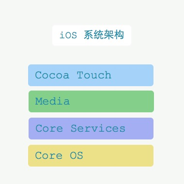
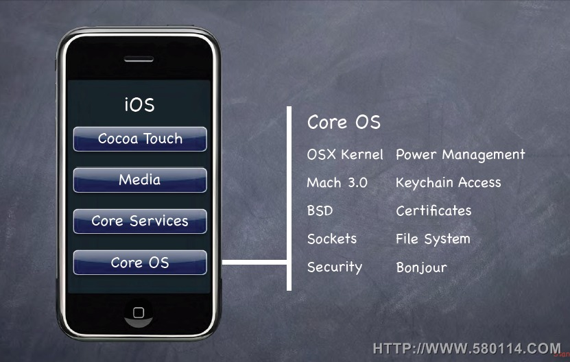
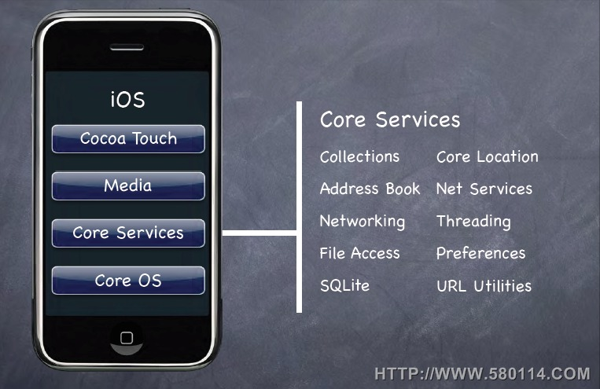
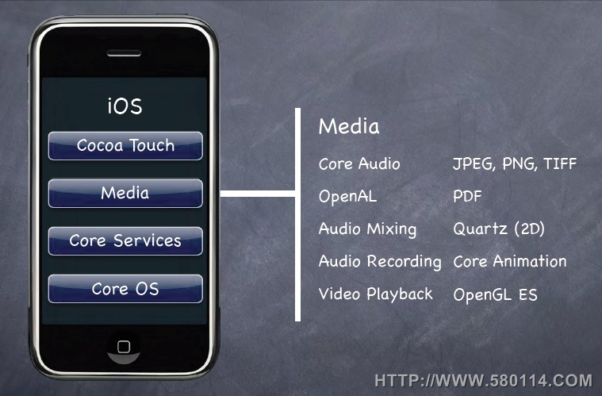
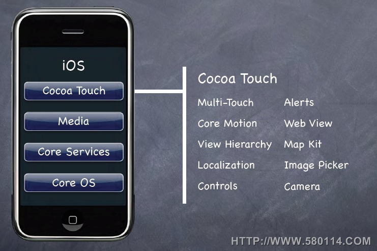

iOS 系统架构如图  一、核心操作系统层(Core OS layer): 
- Core OS是用FreeBSD和Mach所改写的Darwin
- 提供了硬件驱动, 内存管理,程序管理,线程管理(POSIX),文件系统,网络(BSD Socket),标准输入输出等功能
二、核心服务层(Core Services layer): 
- 电话本(AddressBook.framework)
- 核心基础框架(CoreFoundation.framework)
- CFNetwork(CFNetwork.framework)
- 核心位置框架(CoreLocation.framework)
- 安全框架(Security.framework)
- SQLite
- 支持XML
三、媒体层(Media layer): 
- 图像技术(Graphics Technologies)
- Quartz。核心图像框架(CoreGraphics.framework)
- 核心动画（Core Animation）
- OpenGL ES
- 音频技术(Audio Technologies)
核心音频（Core Audio Family）
框架(Framework) 服务(Service) CoreAudio.framework 定义核心音频的音频数据类型 AudioUnit.framework 提供音频和流媒体文件的回放和录制，并且管理音频文件和播放提示声音 AudioToolbox.framework 提供使用内置音频单元服务，音频处理模块 OpenAL
- 视频技术(Video Technologies)
四、可触摸层(Cocoa Touch layer):

- UIKit框架(UIKit.framework)
- 基础框架(Foundation.framework)
- 电话本UI框架(AddressBookUI.framework)